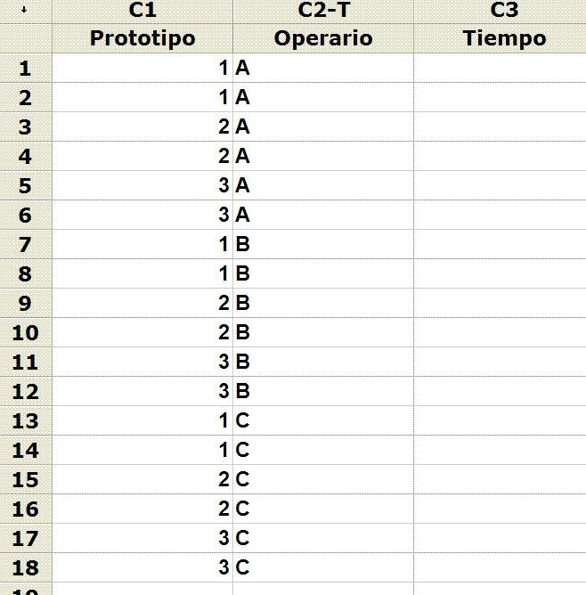

4. R & R
En este capítulo vamos a tratar la importantísima cuestión de los sistemas de medida. Siendo Seis Sigma una metodología basada en el análisis avanzado de datos, el asegurar la bondad de éstos es absolutamente crítico para todo el desarrollo del proyecto de mejora.
Podríamos atrevernos a decir que este es, junto con el Diseño de Experimentos, el capítulo más importante de la asignatura y de la propia metodología.
Los objetivos de este módulo son los siguientes:
a) comprender la importancia de la validación de los sistemas de medida en cualquier análisis científico de datos.
b) asimilar los conceptos básicos del proceso de validación.
c) utilización de Minitab para la validación de datos de tipo continuo.
La información para este módulo aparece en el archivo "4.pdf". El alumno irá leyendo el material en los bloques de transparencias que se indican a continuación:
Bloque 1) -transparencias nº 1 a la nº 19 -
Esta es la parte donde se describen los conceptos básicos del tema, que podrían resumirse cualitativamente en la nº 7 y cuantitativamente en la nº 8. La variación total observada de un proceso se puede descomponer en una serie de partes, cada una de las cuales está asociada a un factor responsable de la variación (p. ej. el operario, el equipo, etc)
Bloque 2) -transparencias nº 20 a la nº 24 -
Las tres primeras son una muy buena guía sobre cómo preparar un plan de recogida de muestras para validar un sistema de medida; las dos segundas nos muestran cómo Minitab nos ayuda a preparar la tabla y dejar todo listo para recoger los valores (columna C5 "Response" de la nº 24)
Bloque 3) -transparencias nº 25 a la nº 34 -
Este es un ejemplo completo de las salidas de Minitab para un análisis R&R. El alumno debe repetir el caso y prestar especial atención a la nº 27 (resultados gráficos) y a las nº 33 y 34 (resultados numéricos)
Bloque 4) -transparencias nº 35 a la nº 41 -
Otro ejemplo a repetir por el alumno.
| Prototipo nº 1 | Prototipo nº 2 | Prototipo nº 3 |
Ancho cuerpo: 5 |
Ancho cuerpo: 5 |
Clip: no Celo en el ala: si Celo en el cuerpo: si Largo ala: 9,5 Largo cuerpo: 6,5 Ancho cuerpo: 5 |
Para cada uno de estos prototipos habrá que obtener el tiempo de vuelo tres veces por cada operario (OpA, OpB y OpC), y deberemos construir una tabla de Minitab como la siguiente:

La columna de los tiempos es la que recogerá las medidas realizadas.

|
Aunque es recomendable comprobar esto, en la práctica se puede empezar a trabajar con los datos de que se disponga; más adelante se comprobará la bondad del sistema de medida.
| |
|
No hay que hacer absolutamente nada con datos no validados; sin haber pasado el análisis R&R un conjunto de datos no significa absolutamente nada.
| |
|
Los datos históricos hay que utilizarlos tal como están, pues sino los perderíamos; los datos que se recojan en el contexto del proyecto de mejora deberán, en cambio, ser validados.
|
Como comentamos al inicio del módulo, el R&R es uno de los aspectos cruciales de cualquier proyecto de mejora y, en general, de cualquier análisis científico de datos. La comprensión de estos conceptos justifica -por sí misma- la realización de un curso sobre Seis Sigma.
El método de cálculo típico, p. ej. el que realiza Minitab, no solo nos dice si el sistema de medida es o no válido sino que en este último caso nos indica qué aspectos son los que tenemos que corregir. ¿Ves esto último?